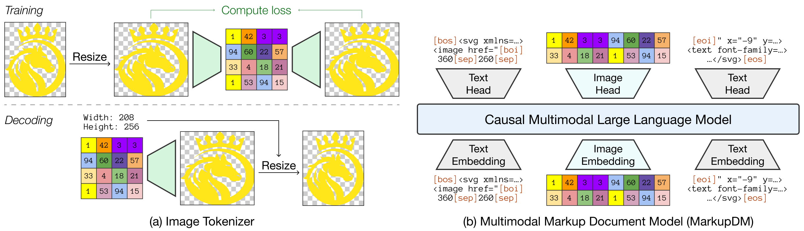
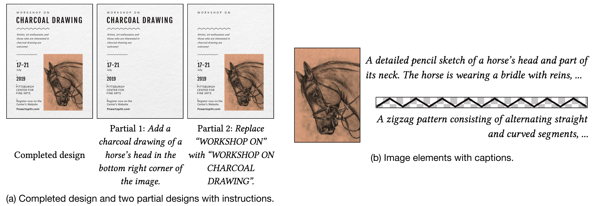
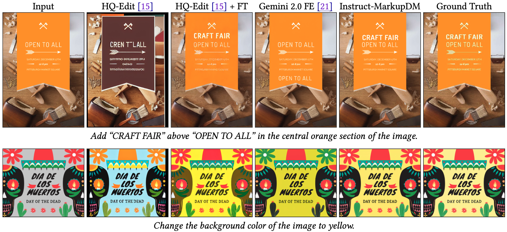

We introduce MarkupDM, a multimodal markup document model that represents graphic design as an interleaved multimodal document consisting of both markup language and images. Unlike existing holistic approaches that rely on an element-by-attribute grid representation, our representation accommodates variable-length elements, type-dependent attributes, and text content. Inspired by fill-in-the-middle training in code generation, we train the model to complete the missing part of a design document from its surrounding context, allowing it to treat various design tasks in a unified manner. Our model also supports image generation by predicting discrete image tokens through a specialized tokenizer with support for image transparency. We evaluate MarkupDM on three tasks, attribute value, image, and text completion, and demonstrate that it can produce plausible designs consistent with the given context. To further illustrate the flexibility of our approach, we evaluate our approach on a new instruction-guided design completion task where our instruction-tuned MarkupDM compares favorably to state-of-the-art image editing models, especially in textual completion. These findings suggest that multimodal language models with our document representation can serve as a versatile foundation for broad design automation.

(a) We first train an image tokenizer by reconstructing images resized to a fixed size. When decoding, the image size is given in addition to the image tokens. (b) We then train MarkupDM, a causal multimodal LLM with separate embedding layers and prediction heads for images and text tokens.

We extend the Crello dataset to create Crello-Instruct, comprising 125K triplets of instructions, partial designs, and completed designs for instruction-guided graphic design completion. The dataset is generated by removing elements from templates and creating editing instructions using multimodal LLMs, with quality filtering via GPT-4o mini. Each image element is annotated with captions to help models understand both semantically meaningful and decorative content.
Each pair shows the predicted completion and the original design from left to right or top to bottom. The green boxes indicate the target text and some of them are zoomed in for better visibility. Note that the rightmost example shows a failure case where the generated text visually conflicts with other elements.
Each triplet shows the input, the predicted completion, and the original design from left to right or top to bottom. The gray squares indicate the target image elements to be completed. The rightmost example illustrates the model's difficulty in producing recognizable main objects.

Qualitative comparison for instruction-guided graphic design completion. Our instruction-tuned MarkupDM achieves the best MSE scores by only adding missing elements rather than altering existing ones, while Gemini 2.0 Flash sometimes applies overly aggressive edits.
@inproceedings{Kikuchi2025,
title = {Multimodal Markup Document Models for Graphic Design Completion},
author = {Kotaro Kikuchi and Ukyo Honda and Naoto Inoue and Mayu Otani and Edgar Simo-Serra and Kota Yamaguchi},
booktitle = {ACM International Conference on Multimedia},
year = {2025},
doi = {10.1145/3746027.3755420}
}